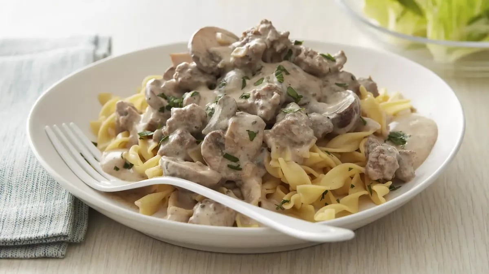

Slow Cooker Beef Stroganoff

Prep Time: 30 Min Total: 30 Min Servings: 8 Ingredients: 13
INGREDIENTS
- 2 tablespoons butter
- 1 package (8 oz) sliced baby portabella mushrooms
- 1 cup chopped onions
- 2 cloves garlic, finely chopped
- 1 lb lean (at least 80%) ground beef
- 1 1/2 cups Progresso™ beef-flavored broth (from 32-oz carton)
- 1 tablespoon Worcestershire sauce
- 3/4 teaspoon salt
- 1/4 teaspoon pepper
- 1/2 teaspoon pepper
- 1/4 cup Gold Medal™ all-purpose flour
- 1 cup sour cream
- 6 cups cooked egg noodles
- Chopped Italian (flat-leaf) parsley, if desired
INSTRUCTIONS
- In 10-inch nonstick skillet, melt butter over medium heat. Cook mushrooms, onions and garlic in butter 5 to 7 minutes, stirring occasionally, until tender. Remove from skillet to small bowl; set aside.
- Increase heat to medium-high. In same skillet, cook beef 5 to 7 minutes, stirring frequently, until no longer pink; drain. Stir in 1 cup of the beef broth, the Worcestershire sauce, salt and pepper; heat to boiling. Beat flour and remaining 1/2 cup beef broth with whisk until incorporated; stir into beef mixture. Add mushroom mixture; return to boiling, and stir constantly about 1 minute or until mixture thickens. Remove from heat; stir in sour cream.
- Serve with cooked egg noodles. Garnish with parsley.